Revisamos tu sitio como lo vive un visitante real: qué tan fácil es de usar, si todas las personas pueden usarlo, cómo se ve y qué tan bien está construido. Estas son las 10 mejoras con más impacto para el negocio.
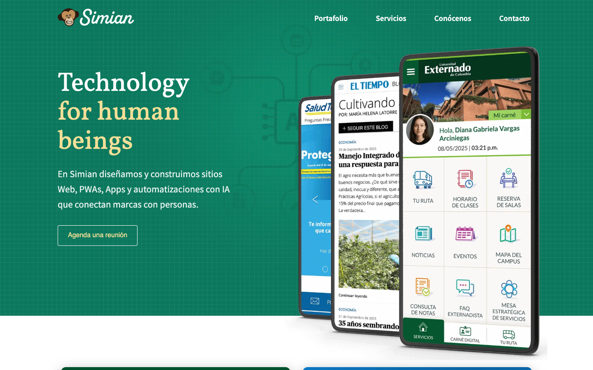
Así ve tu sitio un visitante que llega hoy desde Google.
Un sitio que vende bien debería estar por encima de 80.
¿Cómo calculamos este puntaje? Cada área se evalúa con la misma lista fija de criterios, con peso según su importancia; el puntaje es el porcentaje que el sitio cumple (un criterio cumplido a medias vale la mitad). En accesibilidad y calidad técnica se promedia con la medición de Google Lighthouse. El total es el promedio de las cuatro áreas. Fórmula v3.
Lighthouse móvil, octubre 2026 (total-byte-weight 1.185 KiB; image-delivery-insight: ahorro estimado de 602 KiB)
Mira cómo carga tu sitio frente a tu competenciaCuadro a cuadro, con el reloj corriendo · y cómo lo ve alguien con baja visiónVer comparación ▶Cada cuadro es 1%. ■ Imagen evitable (602 KiB) ■ Todo lo demás
Ordenado por impacto en el negocio. Toca cada punto para ver el detalle.
Por qué importa: Los servicios son el centro de la oferta comercial: hoy no se entienden de un vistazo y quedan fuera para quien navega con teclado o lector de pantalla.
Por qué importa: Los casos de éxito son la prueba que más convence a un comprador B2B; si no tienen salida, se pierde el impulso justo cuando la intención es más alta.
Por qué importa: Vendemos UX/UI accesible: que nuestro propio CTA principal falle contraste y tipografía resta credibilidad ante cualquier cliente que lo revise.
Por qué importa: Es lo primero que ve un prospecto que llega por LinkedIn o WhatsApp, y Google usa el LCP como señal de experiencia.
Por qué importa: La home es nuestra carta de presentación técnica: debe cumplir lo que recomendamos a nuestros clientes.
Por qué importa: Es el punto de conversión del sitio: un lead calificado se responde más rápido, y un envío claro evita abandonos o mensajes duplicados.
Por qué importa: En los primeros segundos el visitante decide si está en el lugar correcto; un titular específico responde «¿esto es para mí?» y ayuda a buscadores y asistentes de IA.
Por qué importa: Vendemos infraestructura, seguridad y DevOps: nuestras cabeceras deben aprobar la misma revisión que haríamos a un cliente.
Por qué importa: Para una agencia, las imágenes propias son prueba de capacidad; las de stock son intercambiables con cualquier competidor.
Por qué importa: Los tokens mantienen la marca idéntica en cada página, demuestran el rigor de UI que vendemos y simplifican cualquier rediseño futuro.
“La home tiene buen material (trabajo real de clientes, logos de peso, una marca reconocible), pero sin tokens ni componentes cada sección resuelve botones, títulos y colores por su cuenta, y el CTA principal termina siendo el elemento más débil de la página.”
En la home conviven cinco estilos de botón con radios de 4, 5 y 6 px, dos verdes sólidos distintos y dos tipografías; el CTA de agenda es un contorno fino en Helvetica/Arial que pesa menos que «Todos los proyectos» y «¿Quiénes somos?». Cuando todo compite al mismo nivel, quien llega no sabe cuál es la acción que esperamos de él, y en la cabecera «Contacto» es un enlace más.
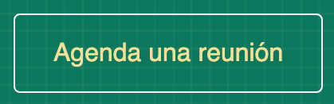
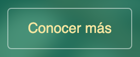
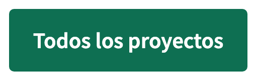
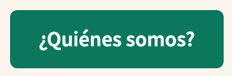
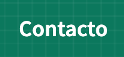
Todos los títulos usan Vollkorn, pero cambian de peso (400, 500 que no se carga y se ve en 400, 700) y de color (verde, café, blanco con amarillo, #E2BC8D en el footer) según la sección. El resultado es que la página no se lee como un recorrido continuo sino como bloques pegados, y el ojo no encuentra un patrón para saber qué es sección y qué es subtítulo.
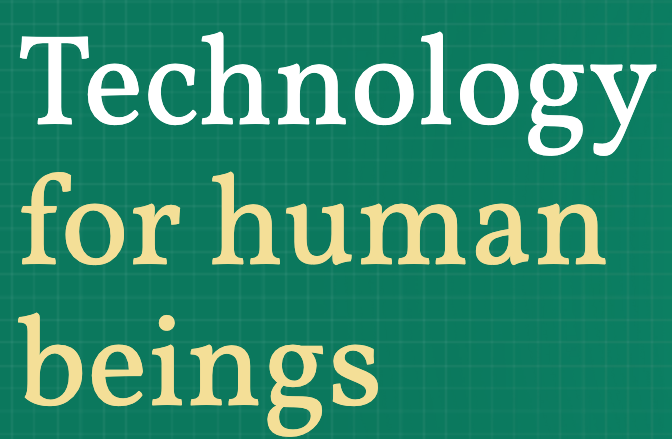
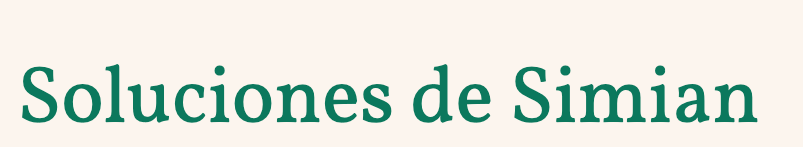
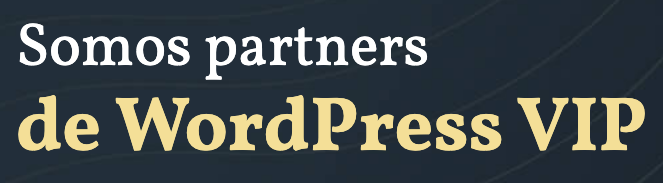
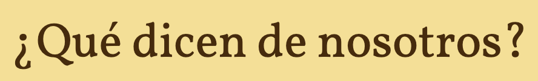
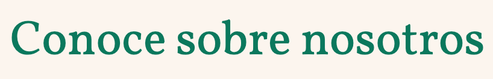
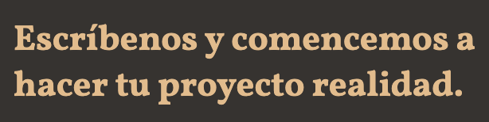
El manual define un verde y un amarillo, pero las hojas de estilo usan cinco verdes, dos amarillos, un café claro, un azul marino y varios grises sueltos, sin ninguna variable CSS. Las diferencias son pequeñas (#0B785D frente a #0B775D difieren en un dígito), pero se acumulan y la marca se ve ligeramente distinta en cada bloque.
El manual pide Vollkorn y Source Sans Pro, pero el hero y Soluciones declaran font-family: sans-serif y el footer pide «Inter», que nunca se carga, así que los botones y el footer se ven en Helvetica/Arial. Justo los elementos que piden acción quedan con la tipografía genérica del sistema.
Pocos colores, cada uno con un trabajo fijo. Así cada página se ve de la misma empresa.
Green forest · #0B785DBotón primario, fondo del hero y títulos sobre fondo claro; texto blanco encima 5,44:1 (AA)
Banana light · #F4DF97Acento y fondo de bandas como testimonios; texto #1B1918 encima 13,22:1 y Dark trunk 9,83:1
Dark trunk · #462B0DTítulos sobre Banana light y banda oscura en lugar de #131D25; texto blanco encima 13,03:1 y Banana light 9,83:1
Tinta · #1B1918Texto de cuerpo; 17,52:1 sobre blanco y 13,95:1 sobre #E7E5E4
Gris 600 · #363330Fondo del footer; texto blanco 12,55:1, Banana light 9,47:1 y #CECCC9 7,83:1
Gris 500 · #6B6561Texto secundario y borde de campos de formulario; 5,74:1 sobre blanco (supera el 3:1 que pide un borde de control)
Gris 400 · #9E9894Solo separadores decorativos; 2,85:1 sobre blanco, no apto para texto ni para bordes de campos
Gris 300 · #CECCC9Separadores y texto terciario sobre fondos oscuros; 7,83:1 sobre #363330
Gris 200 · #E7E5E4Fondo alterno de sección; #1B1918 encima 13,95:1
Blanco · #FFFFFFSuperficie base y tarjetas; soporta todo el texto oscuro de la escala
Enlace · #3F47A9Solo enlaces dentro de texto corrido, nunca botones ni títulos; 7,82:1 sobre blanco
Simian tiene la mejor accesibilidad (94) y el mejor LCP después de Imagine Apps entre los cuatro sitios, pero Imaginamos e Imagine Apps muestran clientes o cifras en el primer pantallazo y Simian no, aunque tiene casos como Externado y El Tiempo para mostrar.
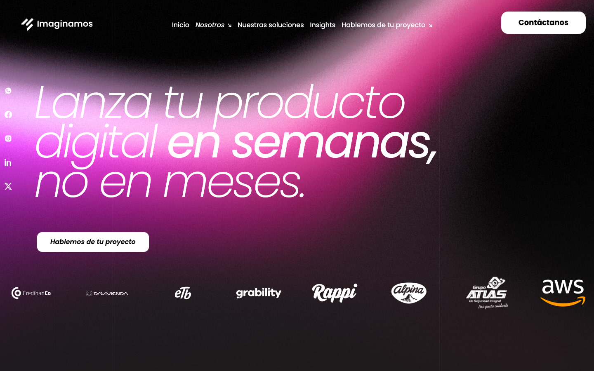
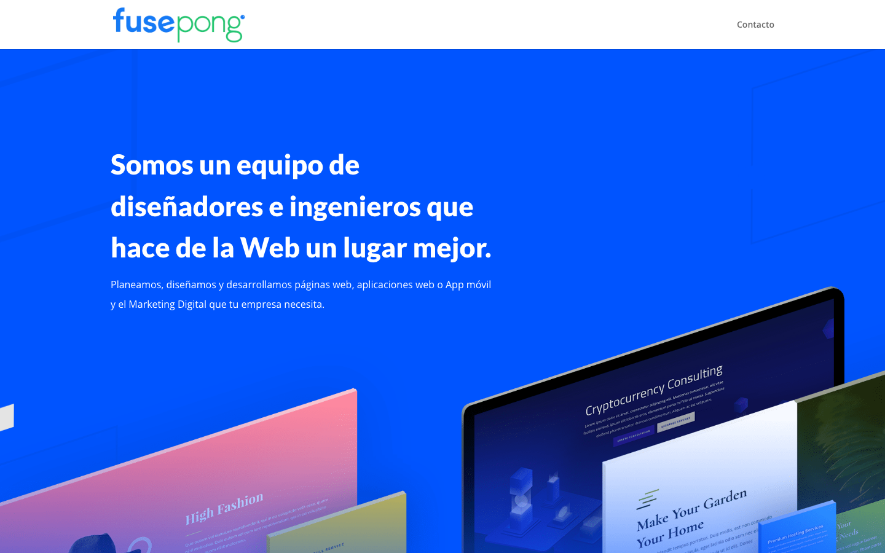
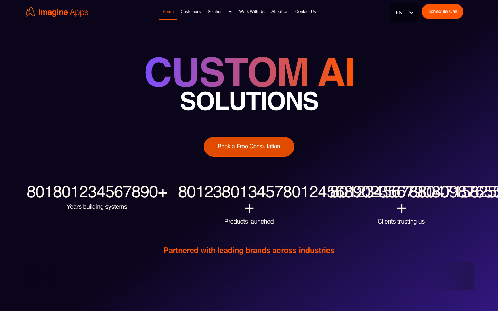
Capturas y mediciones propias (Google Lighthouse, celular). Todos los sitios se evalúan con los mismos criterios; un botón de WhatsApp no cuenta como botón de cotización.
Con un sprint corto de base técnica (sitemap, robots, canonical y datos estructurados) y contenido con cifras y casos, simian.co puede empezar a competir en búsquedas donde hoy solo aparecen directorios y competidores.
| «agencia de desarrollo de software Colombia» Aparecen: Rootstack, Aloa, Behance (Micoworker) | No apareces |
| «empresa desarrollo de apps móviles Bogotá» Aparecen: Clutch, GoodFirms, Grupo GAGC | No apareces |
| «agencia diseño UX UI Colombia» Aparecen: Clutch, DesignProject (Blaster), Sortlist (UZER) | No apareces |
| «partner WordPress VIP Colombia desarrollo web» Aparecen: WP Engine agency directory (AA Programación, DesignPlus), GoodFirms, Clutch | No apareces |
| «empresa automatización con inteligencia artificial para empresas Colombia» Aparecen: Efficiency IT Services (eitserv.tech), Nexcore IA SAS (Clutch), Pymes.ai | No apareces |
| «empresa desarrollo web para medios de comunicación Colombia» Aparecen: Web & Digital Ark SAS (Acquia), Semrush agencies, DesignRush | No apareces |
| «Simian agencia digital Colombia» Aparecen: Sima Agencia Digital SAS, Símbolo Agencia Digital, Simplixity (Clutch) | No apareces |
| «simian.co» Aparecen: GitHub simian-lab, dictionary sites | No apareces |
| «"Simian SAS" desarrollo web Bogotá» Aparecen: StackShare (Simian), LinkedIn, Clutch Bogotá listings | No apareces |
Lo primero que ve un comprador nuevo.
simian.co
Desarrollo web, UX/UI y automatización con IA | simian.coEn Simian creamos productos digitales y automatizaciones con IA: UX/UI, desarrollo y DevOps. Agenda una reunión.simian.co
Simian: desarrollo web, UX/UI y automatización con IADiseñamos, construimos y operamos productos digitales: UX/UI, desarrollo web y móvil, automatización con IA y DevOps. Partners de WordPress VIP.Cada vez que compartes el sitio con un cliente.
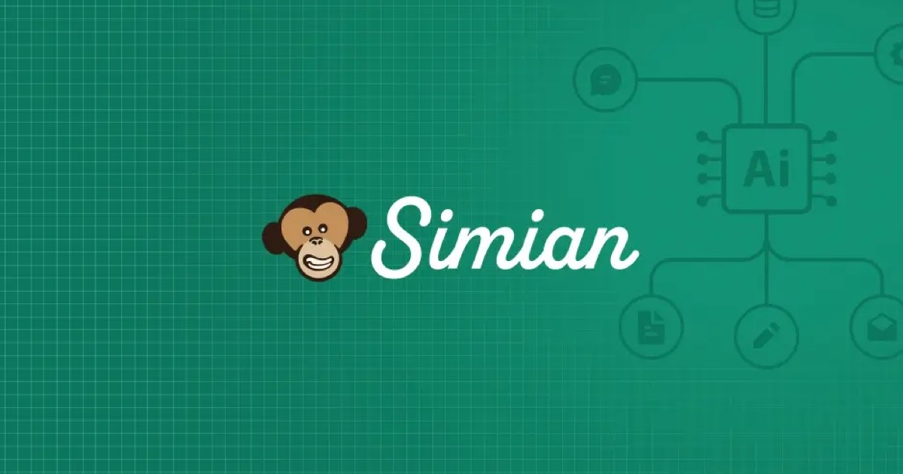
Google y la IA confían menos en un negocio con datos contradictorios.
ChatGPT, Gemini y Perplexity recomiendan empresas que pueden entender y citar.
Pruebas con WebSearch (índice con base en EE. UU.) el 2026-10-27: no es un ranking local de Google Colombia ni personalizado, y no mide menciones en asistentes de IA. Sirve como indicio, no como posición exacta.
| # | Mejora | Área | Impacto | Esfuerzo | Etapa |
|---|---|---|---|---|---|
| 01 | En escritorio, la descripción y el enlace de los 6 servicios solo aparecen al pasar el mouse | Experiencia | Bajo | Semanas 1–2 | |
| 02 | Casos de éxito, testimonios y portafolio terminan sin un llamado a la acción, y la cabecera no tiene un botón de contacto | Experiencia | Bajo | Semanas 3–5 | |
| 03 | El botón «Agenda una reunión» falla contraste, no usa la tipografía de marca y convive con otros 4 estilos de botón | Visual | Bajo | Semanas 1–2 | |
| 04 | En móvil, el contenido principal tarda 5,3 s en laboratorio (2,75 s observado) y las fuentes llegan tarde y duplicadas | Técnico | Medio | Semanas 1–2 | |
| 05 | Las imágenes se sirven en un solo tamaño, sin srcset, y pesan 602 KiB de más en móvil | Técnico | Medio | Semanas 1–2 | |
| 06 | El formulario de contacto no pide empresa, servicio ni alcance, y oculta el foco y el resultado del envío | Experiencia | Bajo | Semanas 3–5 | |
| 07 | El titular principal es «Technology for human beings» y no dice qué hacemos ni para quién | Experiencia | Bajo | Semanas 3–5 | |
| 08 | Faltan 4 de 5 cabeceras de seguridad y el CSS, el JS y las fuentes se guardan en caché solo una hora | Técnico | Bajo | Semanas 1–2 | |
| 09 | Servicios y testimonios usan fotos genéricas de banco de imágenes | Visual | Medio | Semanas 6–8 | |
| 10 | No hay tokens de color ni escala tipográfica: cinco verdes, colores fuera del manual y títulos que cambian por sección | Visual | Medio | Semanas 6–8 | |
| Opcional · Que te encuentren | |||||
| E1 | Título, descripción y vista previa para Google y WhatsApp | SEO / IA | — | Bajo | Semanas 9–12 |
| E2 | Un solo nombre, teléfono y dirección en todas partes | SEO / IA | — | Bajo | Semanas 9–12 |
| E3 | Preguntas frecuentes, ficha de empresa y cifras para la IA | SEO / IA | — | Medio | Semanas 9–12 |
| E4 | Contenido y estructura para aparecer en Google | SEO / IA | — | Medio | Semanas 9–12 |